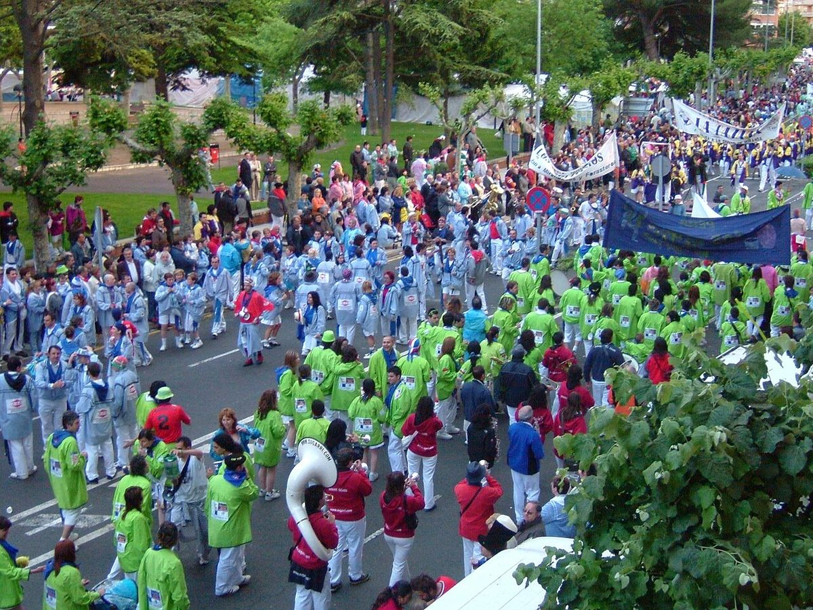

Gemelos electorales · Elecciones: 2004-2023
Aranda y Miranda, las dos Burgos: misma renta y mismo paro, y 11 puntos de distancia en el voto a la derecha
Aranda de Duero y Miranda de Ebro tienen casi la misma población (33.360 y 35.745 habitantes), la misma renta (21.275 y 21.874 euros) y el mismo paro (14,8 % y 14,9 %). El 23J, Aranda dio a PP, Vox y Cs el 50,7 % y la ganó el PP; Miranda, el 39,4 %, y la ganó el PSOE con el 43,5 %.
Dato: verificable y reproducible

La pregunta: ¿Votan igual las dos grandes ciudades de la provincia de Burgos después de la capital?
Dos ciudades gemelas
DatoDespués de la capital, las dos ciudades más pobladas de la provincia de Burgos se parecen en casi todo lo que mide el INE. Renta por unidad de consumo: 21.275 euros en Aranda y 21.874 en Miranda. Paro en 2021: 14,8 % y 14,9 %. Edad media: 44,8 y 45,6 años. Estudios superiores: 29,5 % y 29,9 %.
DatoCon ese perfil, el modelo de esta serie predice para las dos lo mismo: un 54,1 % de voto a PP, Vox y Cs. Aranda se queda cerca (50,7 %). Miranda, 14,7 puntos por debajo, es la 7.ª mayor diferencia a la baja de España entre los municipios de más de 10.000 habitantes.
Una distancia que ha crecido
DatoEn 2004 ya votaban distinto, pero menos. La derecha sacó el 43,0 % en Aranda y el 36,3 % en Miranda; el PSOE, el 47,1 % y el 53,6 %.
DatoDesde entonces, la derecha creció en Aranda hasta el 50,7 % y en Miranda apenas se movió (39,4 %). En el conjunto de la provincia pasó del 51,9 % al 53,5 %.
PatrónLa distancia entre las dos ciudades pasó de 6,7 puntos en 2004 a 11,3 en 2023. Miranda se ha quedado donde estaba; Aranda se ha movido con su provincia.
DatoVox muestra la misma brecha: en noviembre de 2019 sacó el 14,5 % en Aranda y el 9,9 % en Miranda; en 2023, el 12,3 % y el 9,1 %.
En las municipales
DatoEn mayo de 2023 el PSOE fue la lista más votada en Miranda (37,0 %). En Aranda, el PP (22,5 %) superó por poco al PSOE (22,3 %), y las listas locales y otras sumaron el 27,8 %.
Sobre el terreno
DatoMiranda de Ebro es desde el siglo XIX un nudo ferroviario: en ella se cruzan las líneas Madrid-Irún y Castejón-Bilbao. Fuentes: 1, 2
DatoBajo el casco histórico de Aranda de Duero se extiende una red de bodegas y túneles excavados para guardar el vino, declarada Bien de Interés Cultural por la Junta de Castilla y León en 2015. Fuentes: 1, 2
Lo que no sabemos
- HipótesisPor qué se separaron. Miranda está en el límite con Álava y La Rioja, y Aranda en la ribera del Duero; las diferencias de estructura económica o de historia local son hipótesis que esta pieza no ha contrastado con dos fuentes.
Los datos
| Elección | Derecha Aranda | Derecha Miranda | PSOE Aranda | PSOE Miranda |
|---|---|---|---|---|
| 2004 | 43,0 | 36,3 | 47,1 | 53,6 |
| 2008 | 42,3 | 37,1 | 46,7 | 53,0 |
| 2011 | 49,6 | 42,8 | 31,6 | 39,1 |
| 2015 | 51,5 | 39,4 | 23,3 | 27,7 |
| 2016 | 56,8 | 42,8 | 24,4 | 29,0 |
| abr. 2019 | 54,4 | 39,6 | 30,7 | 37,2 |
| nov. 2019 | 52,2 | 38,2 | 34,5 | 41,0 |
| 2023 | 50,7 | 39,4 | 34,9 | 43,5 |
Método y fuentes
- Qué se compara
- Las dos ciudades de la provincia de Burgos con más población después de la capital, en las ocho generales de 2004 a 2023.
- Límites
- «Gemelos» según los indicadores del INE; pueden diferir en otros que los datos no recogen. «Derecha» suma PP, Vox y Cs.
- Metodología completa
- Cómo se calculan los porcentajes, el modelo, los gemelos y los escaños
- Fuentes
- Ministerio del Interior, resultados electorales por mesa (Infoelectoral). Congreso 2004-2023 vía pollspaindata, commit ee5ecda; municipales 2007-2023 de los ficheros de Infoelectoral
- INE, Atlas de Distribución de Renta de los Hogares 2023 (renta, edad, población), vía ineAtlas.data
- INE, Censo de Población y Viviendas 2021 (estudios, paro, extranjeros)
- Autoría
- Nacho
- Revisión de datos y texto
- Nacho, 2026-10-07
- Publicado · actualizado
- 2026-10-06 · 2026-10-07
- Correcciones
- Ninguna. Historial del Atlas